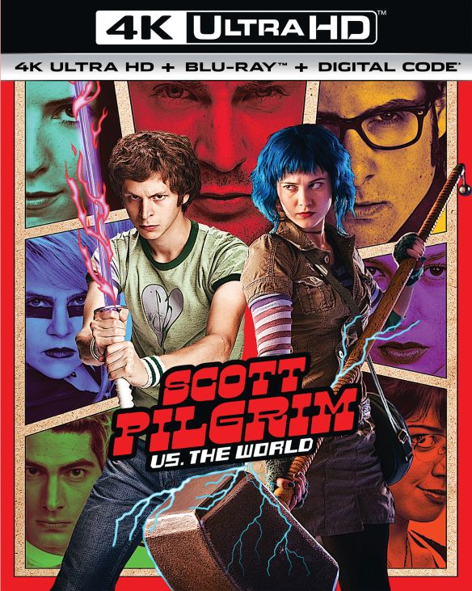
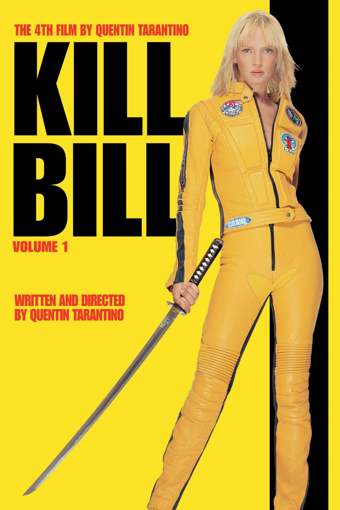

A PopularFilms foi fundada por Reed Hastings e Marc Randolph, em 1997. O projeto inicial da empresa tem origem na ideia de alugar DVDs, pelo correio. Sendo assim, um ano depois, foi lançado o site da companhia, para cumprir esse objetivo. Em 1999 estreou um tipo de serviço de assinatura e, com isso, os DVDs poderiam ser alugados sem um limite mensal ou multa por atraso.
Atualmente, a PopularFilms oferece o streaming de vídeo — o que permite o acesso instantâneo a filmes, séries, documentários, shows e animações presentes no catálogo. O serviço está disponível em 190 países e em mais de 30 idiomas. Com isso, a somatória de assinantes pelo mundo é de cerca de 200 milhões, segundo a plataforma.
Top 10 Filmes
Scott Pilgrim Contra o mundo

Na Natureza Selvagem
Jogos Vorazes
Bastardos Inglórios
Kill Bill

O jogo da Imitação
O menino que descobriu o vento
O lado bom da vida
Stand and deliver
A teoria de tudo
Curiosidades
1. Michael Cera
Edgar Wright sabia exatamente quem ele queria que fosse seu Scott Pilgrim. Perto do lançamento do filme em 2010, Wright disse à Entertainment Weekly que quando ele foi convidado para fazer o filme, ele estava assistindo a Arrested Development. Assim, ele imediatamente pensou que Michael Cera seria perfeito para o papel, se ele fosse um pouco mais velho.
2. Na natureza sem dublês
No filme, Emile Hirsch teve que encarar cenas bem difíceis, como um básico encontro com um urso pardo, por exemplo. Além de atravessar corredeiras e escalar montanhas. Ele fez tudo isso sem dublês.
3. Origem do enredo
Collins teve a ideia para a história de Katniss quando numa noite ela estava passeando pelos canais da televisão e apareciam diversos reality shows em alguns e reportagens sobre a Guerra do Iraque em outros. Ela conta que “as duas coisas começaram a se fundir em sua mente de um modo muito perturbador”.
4. Realidade ou ficção
Embora o filme seja fictício, foi parcialmente inspirado na Operação Greenup, uma missão real do Escritório de Serviços Estratégicos (o serviço de inteligência dos EUA). Em fevereiro de 1945, os agentes Frederick Mayer (um espião americano nascido na Alemanha), Hans Wijnberg (um agente nascido na Holanda, que, como Mayer, era judeu) e Franz Weber (um ex-oficial austríaco da Wehrmacht) foram lançados de paraquedas na Áustria. Durante vários meses, Mayer reuniu informações sobre a Fortaleza Alpina dos alemães, fazendo-se passar por oficial nazista e eletricista francês.
5. Referência
No primeiro filme, o conjunto amarelo que a atriz usa é uma referência a Bruce Lee no filme "O Jogo da Morte".
6. A injustiça sofrida por Turing
Em entrevista ao USA Today, Cumberbatch disse sobre Turing Real Pardon, "A única pessoa que deve perdoar alguém é ele (Turing). Felizmente, o filme vai trazer à tona o ser humano extraordinário que ele era e como foi terrível (seu tratamento pelo governo). É uma parte realmente vergonhosa, desgraçante da nossa história".